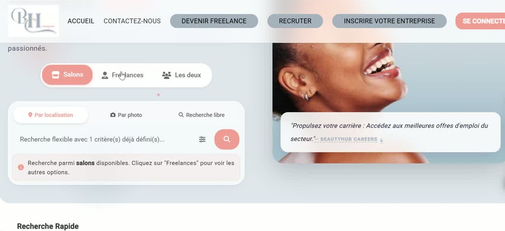
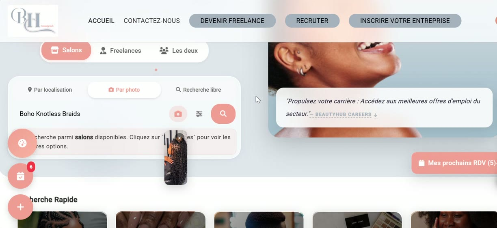
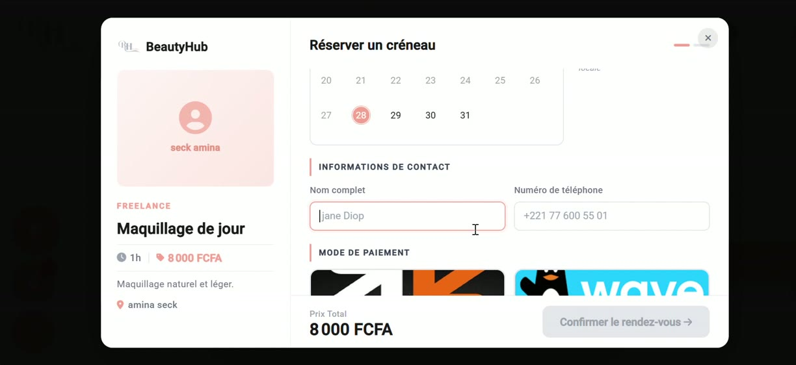
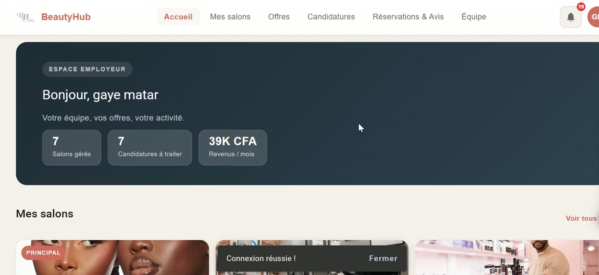

Seynabou Gaye · Développeuse Full-Stack & Data Analyst
Je conçois et je construis des produits numériques qui tiennent la route.
Ingénieure en Systèmes d'Information basée à Dakar. J'analyse le besoin du client et j'y réponds de la manière la plus simple, en passant par une architecture solide et scalable — de la conception au produit fini. J'ai fondé BeautyHub pour prouver que ça marche en vrai.
profile.jpg
À propos
Mon histoire
Tout est parti d'un constat très concret : à Dakar, trouver une coiffeuse fiable ou un salon de qualité tient encore beaucoup du bouche-à-oreille et du hasard. Passionnée de coiffure afro depuis toujours et ingénieure en systèmes d'information de formation, j'ai voulu régler ce problème avec la technologie plutôt qu'avec un énième carnet d'adresses — c'est devenu BeautyHub.
Entre mon Master en Systèmes d'Information Répartis à l'UCAD et des missions en freelance puis en startup, j'ai construit une pratique qui couvre tout le cycle produit : architecture backend (Java/Spring Boot, Laravel), interfaces web et mobile (Angular, Flutter), et plus récemment l'intégration d'IA pour rendre les produits vraiment utiles — comme la recherche visuelle par photo que j'ai construite sur BeautyHub avec l'API Gemini Vision.
Et parce que je reste connectée au terrain, je pratique moi-même la coiffure afro professionnelle — ça m'aide à concevoir des outils qui collent aux besoins réels des clientes et des coiffeurs, pas à ceux qu'on imagine depuis un cahier des charges.
Ma façon de travailler
Je relie produit, technique et données.
Concrètement, ça veut dire quoi ? Une architecture qui reste lisible, des interfaces cohérentes, et de la donnée qui sert vraiment le produit — le détail par domaine juste en dessous.
Une bonne architecture est une architecture qu'on ne remarque pas : elle tient, elle reste lisible, et elle laisse le produit évoluer sans tout casser.
Je choisis mes outils en fonction du problème réel à résoudre, jamais l'inverse. Chaque techno ou service externe ajouté doit se justifier par un usage concret.
Backend & Architecture
Je conçois des architectures REST et des modèles de données (Java/Spring Boot, Laravel, Node.js) qui restent lisibles quand le produit grandit.
Frontend & Mobile
Angular et Flutter pour des interfaces cohérentes sur web et mobile, pensées pour rester maintenables sur la durée.
Data & IA
ETL, BI, PostGIS, et intégration d'API comme Gemini Vision — j'utilise la donnée quand elle rend un produit vraiment plus intelligent.
Qualité & DevOps
Tests automatisés (JUnit), CI/CD (GitHub Actions), Docker : je livre du code sur lequel une équipe peut compter.
Réalisations
Projets




BeautyHub
À Dakar, dénicher une coiffeuse fiable ou un salon de qualité relève souvent du bouche-à-oreille. BeautyHub règle ce problème avec une plateforme géolocalisée qui connecte clientes, coiffeurs indépendants et salons.
- Full-stack de bout en bout : Spring Boot, Angular, Flutter (Clean Architecture / GetX).
- Authentification sécurisée avec Keycloak, matching géospatial via PostgreSQL/PostGIS.
- Recherche visuelle par photo grâce à l'API Gemini Vision, pour matcher un style plutôt qu'un mot-clé.
- Paiements mobiles locaux intégrés dès le départ : Orange Money, Wave.
ERP-CRM Flotte de Taxis
Le défi n'est pas d'afficher des taxis sur une carte, mais de garder chaque position et statut de course cohérents en temps réel entre le backend et l'app des chauffeurs.
HomeRev
Un ERP métier pour la rénovation immobilière où devis, métrage, dépenses et paiements doivent rester synchronisés sans jamais désynchroniser le chantier réel.
Voir le site ↗Projet BI & Data Analysis
Un pipeline ETL complet transformant des données brutes en rapports SSRS exploitables pour la prise de décision — la partie invisible mais critique de la BI.
Application Wallet & CI/CD
Un backend Spring Boot pensé dès le départ pour la fiabilité : tests JUnit et pipeline GitHub Actions/Docker qui bloquent tout déploiement non testé.
En bref
Une ingénieure produit, technique et fiable.
Je suis ouverte à de nouvelles opportunités — mission freelance, poste full-stack ou data. Master en Systèmes d'Information Répartis (UCAD) en poche, et l'envie de rejoindre une équipe qui construit des choses sérieuses.
Contact
Travaillons ensemble
Le plus rapide, c'est l'email ou WhatsApp — je réponds généralement sous 24h.